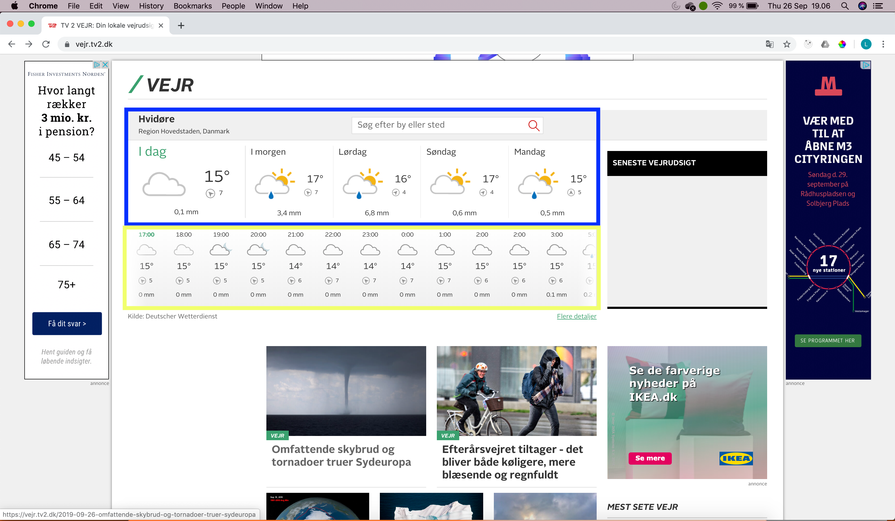
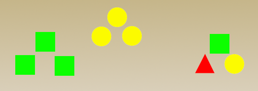

Opgaver for uge 4
Jeg har valgt at bruge TV2 vejret hjemmeside til at vise 2 af gestaltlovene. Det er Proximity (nærhed) og Similarity (ensartethed).
I området markeret med blåt er I morgen, Lørdag, Søndag og Mandag elementer som har en lighed. Dermed er getaltloven Proximity opfyldt.
I området markeret med gult ligner de enkelte tidspunkt kolonner hinanden. Dermed er gestaltloven Similarity opfxyldt.
På nedenstående tegning har jeg prøvet at illustrere nogle af gestaltlovene.
